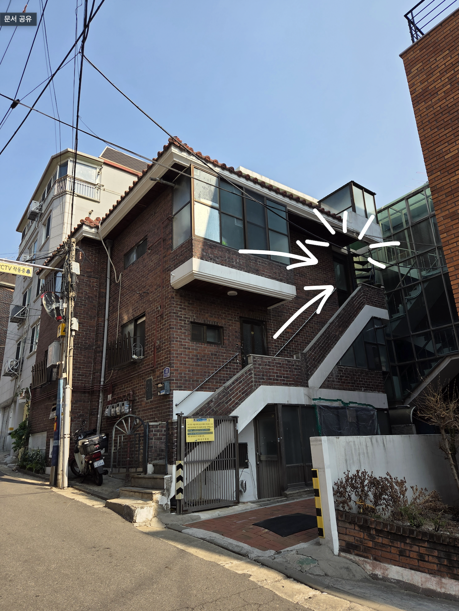
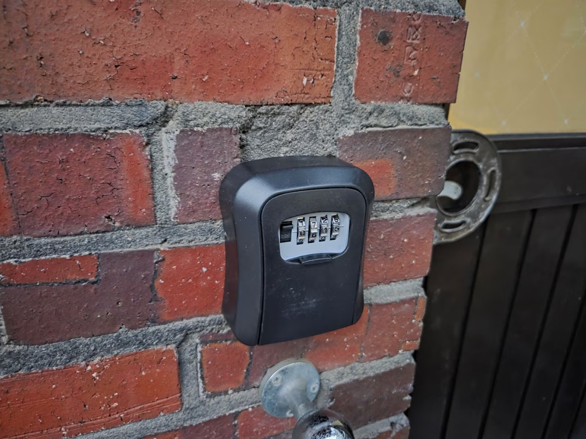
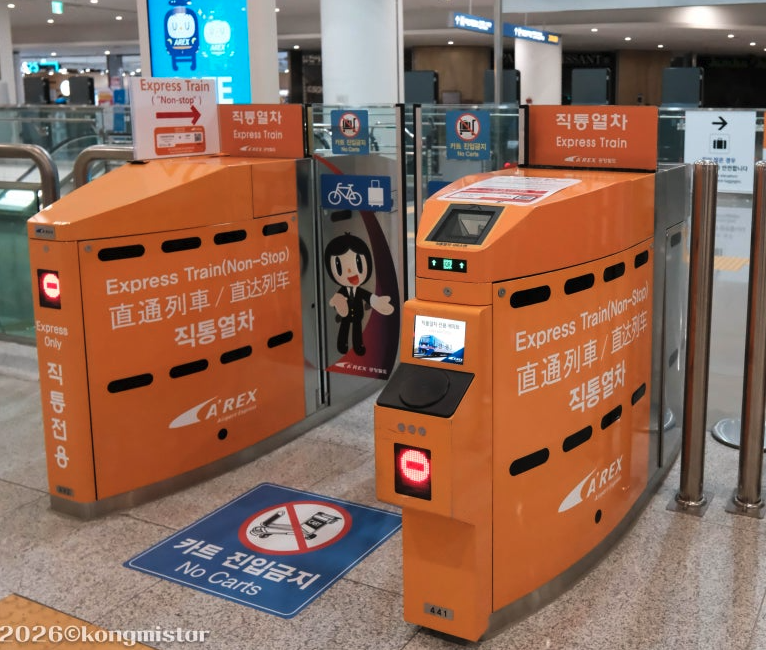
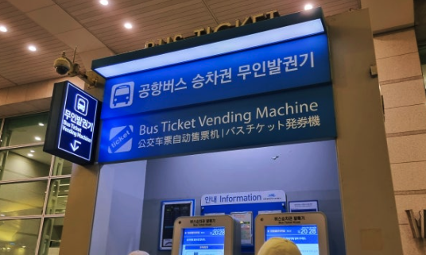
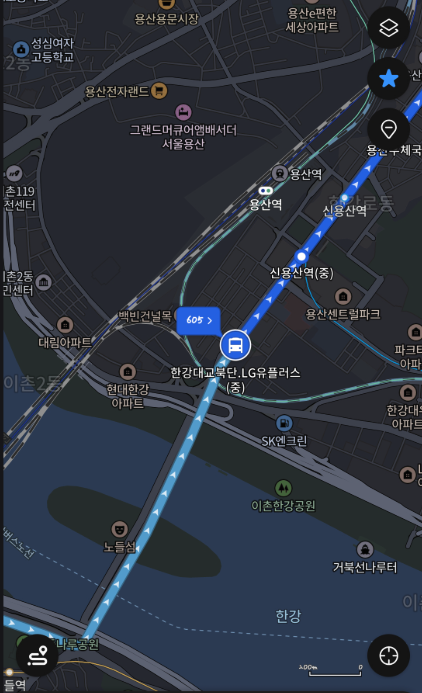
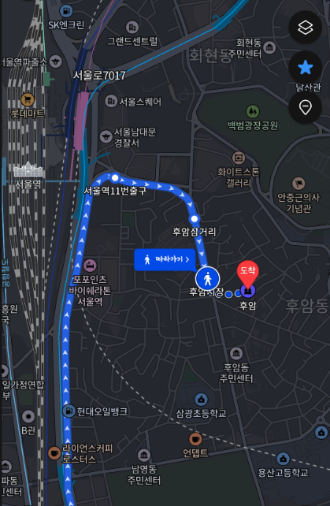
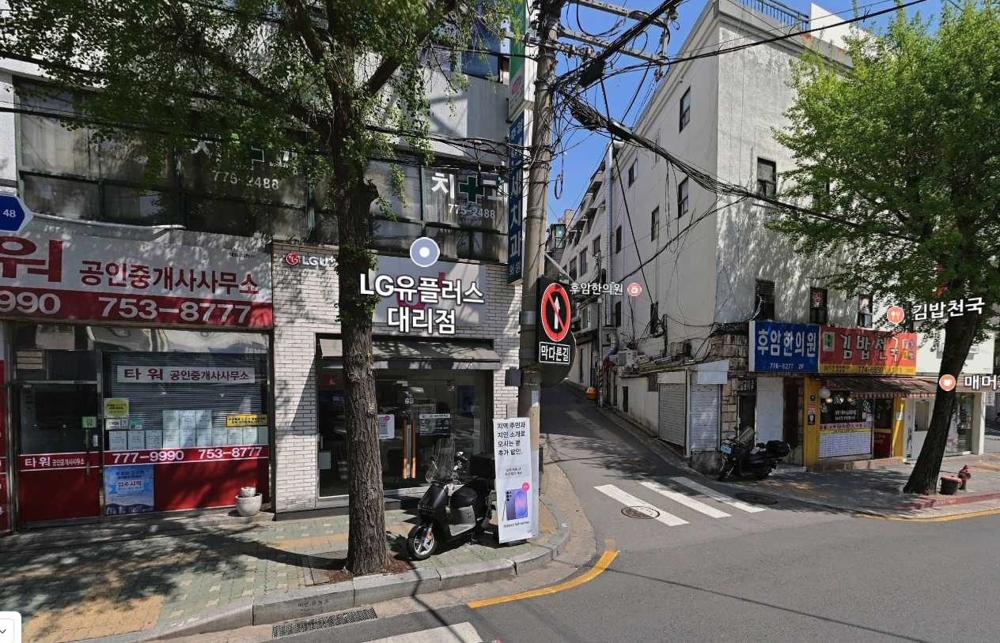
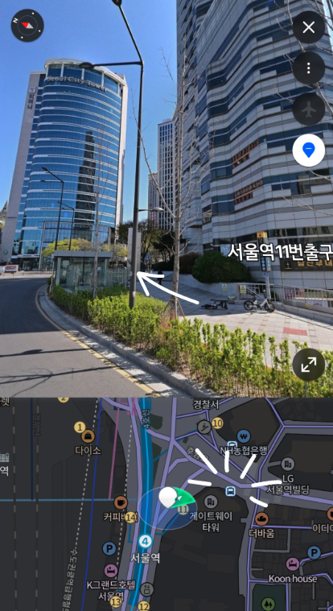
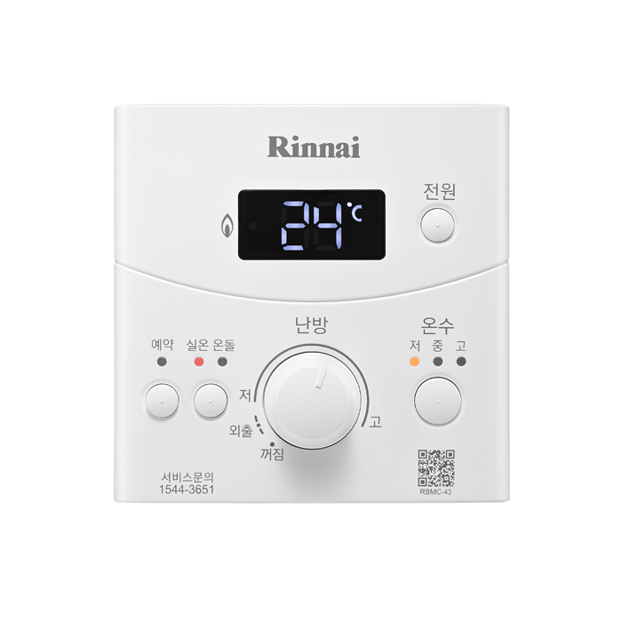
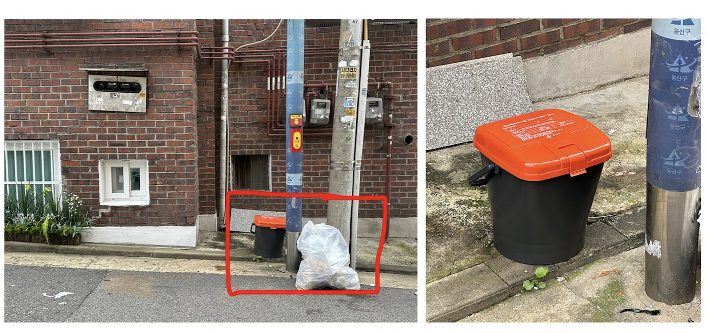

Wi-Fi
이름U+NetEFC5
비밀번호7C25259EM*
체크인부터 주변 추천까지, 머무는 동안 필요한 안내를 한곳에 모았습니다.
자주 확인하는 내용을 빠르게 열어보세요.
아이콘을 누르면 위치별 요약, 사용법, 주의점이 표시됩니다.
아이콘을 누르면 위치별 요약, 사용법, 주의점이 표시됩니다.
체크인/아웃, 주차, 숙소 이용, 쓰레기 배출 안내를 검색하거나 카테고리로 골라보세요.
Check-in: 오후 3시부터 셀프 체크인 가능합니다.
Check-out: 오전 11시까지입니다.
얼리 체크인이나 레이트 체크아웃이 필요하시면 미리 문의해 주세요. 가능한 경우 최대한 도와드리겠습니다.


숙소는 해당 건물의 가장 윗층입니다. 계단을 따라 가장 위까지 올라와 주세요.
현관문 왼쪽에 키박스가 있습니다. 키박스 비밀번호는 예약자분의 연락처 뒷 4자리입니다.
열쇠를 분실하지 않도록 주의해 주세요. 분실 시 교체 비용 8,000원이 발생합니다.
English: 22 Huam-ro 30-gil, 2F (top floor), Yongsan-gu, Seoul, Korea
국문: 서울특별시 용산구 후암로30길 22 2층 (가장 윗층)

가격: 약 13,000KRW
1. 표 구매
2. 탑승
3. 서울역에서 하차
가격: 4,850KRW
직통열차와 개찰구 위치는 같습니다. 일반철도 개찰구로 들어가면 됩니다.
탑승 후 서울역에서 하차하면 됩니다.
가격: 18,500KRW
1. 표 구매

2. 한강대교북단.LG유플러스에서 하차
3. 605번 버스를 탑니다. (파란색 버스)

4. 후암시장에서 하차

5. LG U+ 매장 옆 골목으로 이동

언덕을 내려가면 LG U+ 매장이 보입니다. 해당 골목으로 들어와 체크인은 어떻게 하나요?에 있는 건물로 오시면 됩니다.
택시
서울역에서 1번 출구로 나오면 바로 앞에 택시 승강장이 있습니다.
택시기사님께 용산구 후암로 30길 22 주소를 보여주세요.
버스
1. 11번 출구

11번 출구로 나옵니다. 잠깐 걷다보면 버스정류장이 나옵니다.
2. 버스 탑승
해당 위치에서 605, 400 버스를 탑승합니다.
3. 후암시장에서 하차
4. LG U+ 매장 옆 골목으로 이동
LG U+ 매장 옆 골목으로 들어와 체크인은 어떻게 하나요?에 있는 건물로 오시면 됩니다.
1. 교통카드
편의점에서 T-money 카드를 구매 후 충전하면 지하철이나 버스 이용 시 사용할 수 있습니다.
버스는 승차할 때와 하차할 때 모두 교통카드를 태그해야 합니다.
2. 환승
30분 이내에 다른 교통수단으로 갈아탈 시 추가 요금 없이 이어서 이동할 수 있습니다.
3. 앱 추천
Naver Map, Kakao Map을 다운받으면 지하철 노선도나 경로 탐색이 쉽습니다.
숙소에서 약 260m 떨어진 후암재래시장 공영주차장을 이용해 주세요.
해당 숙소는 2.5층 높이의 계단을 올라야 합니다. 체크인과 짐 이동 시 참고해 주세요.
가끔 1층 할머니가 1층 문을 열어둘 때가 있습니다. 조용히 살짝 지나가시면 됩니다.
떠나기 전에 두고 간 물건이 없는지 다시 한 번 확인해 주세요.
여기서 행복한 추억을 만드셨기를 바라며, 잠시 시간이 되신다면 멋진 리뷰를 남겨주시면 감사하겠습니다! 🤍
오래된 주택이라 방음이 완벽하지 않습니다. 특히 밤늦은 시간에는 이웃을 위해 목소리, 통화 소리, 음악 소리를 낮춰 주세요.
밤 10시 이후에는 큰 음악이나 큰 대화를 삼가 주세요.
샤워 후에는 바닥 물기가 잘 마를 수 있도록 욕실 문을 열어두는 것을 추천드립니다.
변기에는 비치된 화장실 휴지만 넣어 주세요.
물티슈, 여성용품 등은 변기에 넣지 말고 쓰레기통에 버려 주세요.
물에 녹는 물티슈도 오래된 배관을 막을 수 있어 사용 금지입니다.
숙소 내부에서는 절대 금연입니다.
숙소 외부에서 흡연하시는 경우 담배꽁초는 숙소로 가져와 버려주시면 감사하겠습니다.
초록색 소파 옆 게스트북 첫 페이지에 붙어 있는 QR 코드를 스캔해 주세요.
직접 입력할 경우 Wi-Fi 이름은 U+NetEFC5, 비밀번호는 7C25259EM*입니다.
준비된 커피 캡슐과 인센스는 자유롭게 사용하셔도 됩니다.
사용한 캡슐과 인센스 재는 종류에 맞게 잘 버려주세요.
음식 배달이나 쇼핑몰 등 온라인 주문이 힘든 경우, 주문 링크와 필요한 물품을 설명해 주시면 대신 주문해드립니다.
결제는 에어비앤비의 도움 요청 → 도움말 센터를 통해 결제 요청으로 진행됩니다.

큰방 입구쪽에 보일러 컨트롤러가 있습니다.
보일러 전원과 온수 불이 켜져 있는지 확인해주세요.
쓰레기통은 부엌 옆 창고에 있습니다.
3단 쓰레기통은 일반 쓰레기, 캔, 병으로 구분되어 있고, 옆에는 단단한 플라스틱 전용 쓰레기통이 있습니다.
각 쓰레기통 옆에 걸어둔 비닐은 해당 종류의 쓰레기만 담아달라는 뜻입니다. 세부 분류는 쓰레기통에 붙은 안내를 확인해 주세요.
일반 쓰레기는 일반 쓰레기통 옆에 걸린 봉투를 사용해 주세요.
휴지, 비닐, 오염된 포장재, 작은 생활 쓰레기처럼 재활용이나 음식물로 분리하기 어려운 것은 일반 쓰레기에 넣어 주세요.
어디에 넣어야 할지 모르겠는 쓰레기는 호스트에게 문의하시거나 일반 쓰레기로 버려 주세요.
음식물 쓰레기는 주방 가장 왼쪽 서랍에 있는 작은 노란색 봉투를 사용해 주세요.
음식물 쓰레기도 공식 봉투에 담아 배출해야 하며
동물 뼈, 생선 뼈, 달걀 껍데기처럼 딱딱하거나 분해가 어려운 것은 음식물 쓰레기가 아니므로 일반 쓰레기로 버려 주세요.
재활용은 쓰레기통 옆에 걸린 반투명 봉투를 사용해 주세요.
각 쓰레기통에 부착된 종류를 기준으로 플라스틱, 캔, 유리 등을 구별해 넣어 주세요.
배출 전 내용물을 비우고 깨끗하게 헹궈 주세요.
봉투가 가득 차면 잘 묶어서 밖에 내놓아 주세요.

모든 봉투는 새지 않도록 단단히 묶어 주세요.
집 앞 전봇대 근처에 넘어지지 않게 가지런히 놓아 주세요.
음식물 쓰레기는 집 앞 주황색 뚜껑의 검정색 통에 넣어 주세요.
쓰레기는 밤에 수거됩니다.
서울 공공자전거 따릉이를 이용하실 수 있습니다.
이용 순서: 따릉이 앱 열기 → 외국인 선택 → 이용권 구매 → 이용권 사용
추천 스팟을 불러오고 있습니다.
추천 스팟을 불러오고 있습니다.